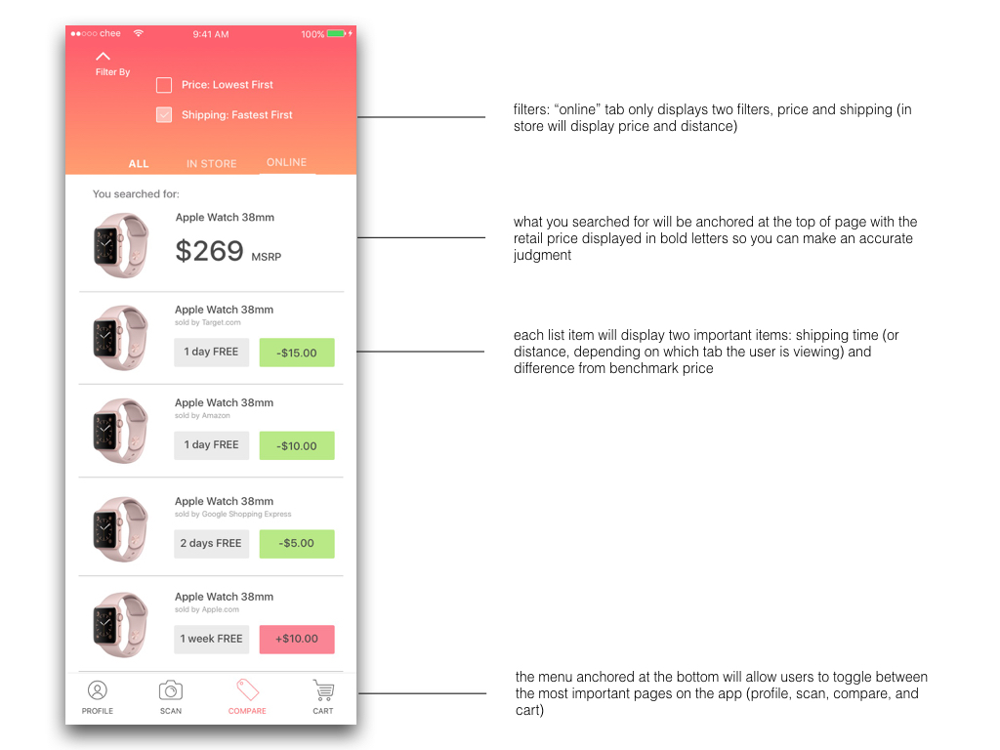
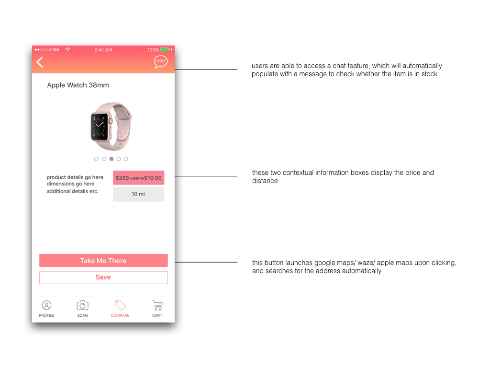
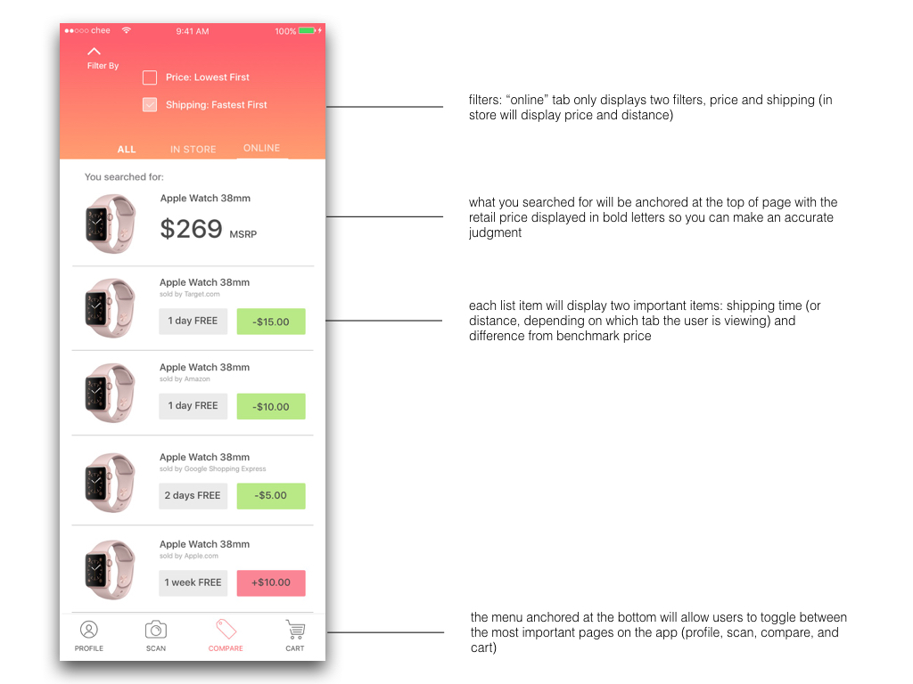
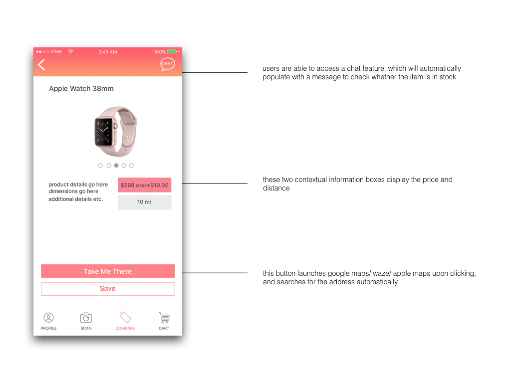
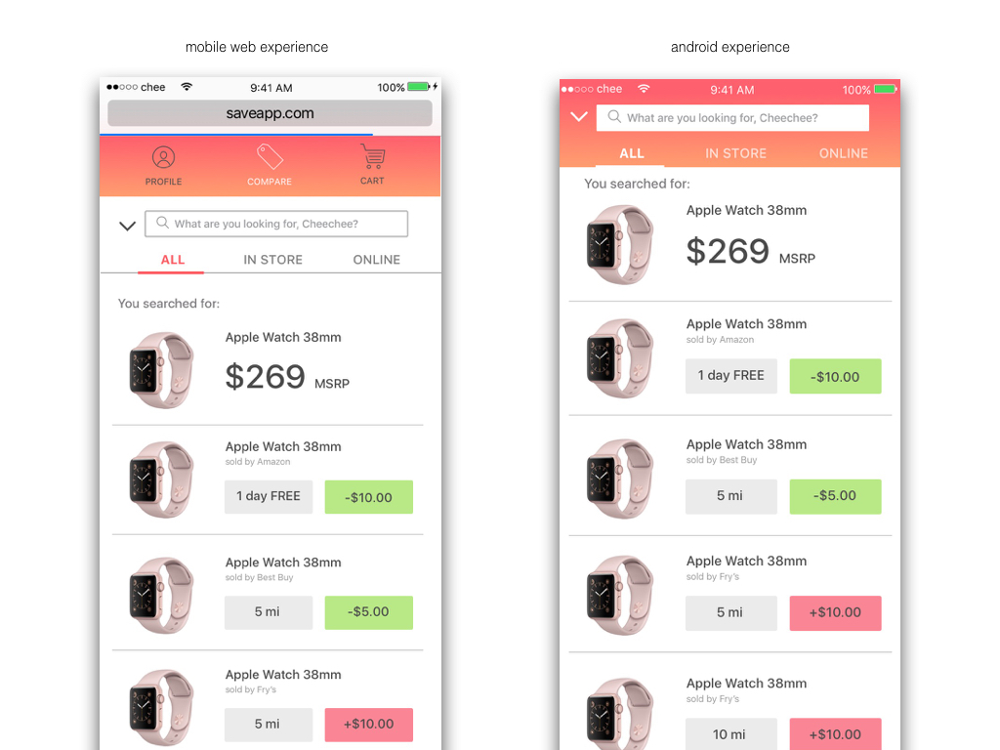
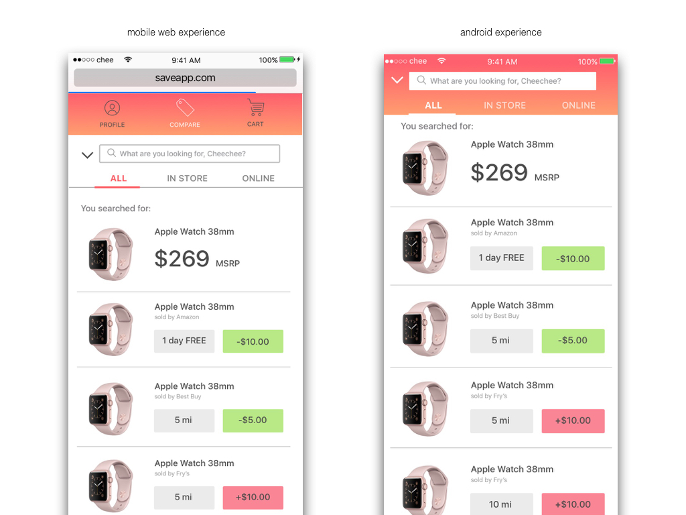

Save App : A Mobile First Concept

The 5-Second Pitch
Save (iOS app) empowers users to find the best deals online and in-store. Using image recognition, Save automatically pulls up similar items and gives the user a clear picture of the tradeoffs between price and shipping time.
Common User Painpoints
In interviewing a handful of potential users, some common painpoints were identified about the shopping process: no comprehensive view of all prices and shipping times available on the market, and out of stock items in physical stores upon arrival.
Target Market Statistics
According to AdWeek, 81% of shoppers conduct online research before they make a purchase (2014). On average, 61% will read product reviews before making any purchase, and a consumer will visit 3 stores before making their purchase.
Think With Google also provided some interesting statistics, including that on average a consumer spends over 15 hrs researching on mobile per week. Mobile also influences purchases across channels. 93% of consumers who use mobile to research their purchase decisions go on to make a purchase. Most purchases happen in physical stores.
Personas
Given the insights above, I developed two personas: Jenn and John.
Jenn: a smart, savvy consumer who wants to save money. Already actively searches for deals online and always looks up coupon codes before clicking purchase. Primary concern with purchases are of price and whether she will be able to obtain the item immediately.
John: a big ticket spender who needs something immediately for a gift. Primary concern is speed of which he will be able to obtain an item, rather than price.
Process
I initially sketched out all the major interactions in the Save app on paper, and walked users through the primary flows of app to better understand how I could organize the UIs.These flows included onboarding, signup/login, scanning items, and price comparison.

The final design
Below, I've annotated a couple of key screens and also included a hierarchy map of all screens in this app. These screens have been adjusted quite a few times via user testing (in person and on usertesting.com) feedback.
 



Closing thoughts
What I would have done differently: as this is a project I did a while back, I would've strengthened the branding of my app concept a bit more. In addition, I would like to adjust and user test the filter concepts more thoroughly in the future. I'd also be interested in user testing in a real physical environment (ex. watching someone interact with the app in-store.)
You can full the full prototype here: InVision
 
